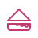

Todo lo que sale de nuestro obrador, hecho a mano cada día.
Quien hambre tiene, en pan piensa.
Panadería
Comenzamos el día con el inconfundible aroma del pan artesanal recién horneado. Elaboramos nuestras piezas con ingredientes selectos y técnicas tradicionales para ofrecerte la mejor calidad.
- Pan Candeal
- Pan Payés
- Baguettes
- Masa Madre
- Pan Gallego
- Campesina
- Pan Integral
- 5 Cereales
- Pan de Espelta
Contáctanos
Palmerones y bollería para alegrar tu día.
Bollería y Palmerones
Nuestra bollería artesanal es ideal para cualquier momento del día, con opciones como croissants, napolitanas, caracolas, ensaimadas, suizos, pepitos y donuts. Pero el verdadero protagonista son nuestros famosos palmerones, crujientes y sabrosos, elaborados con un cuidado especial que los convierte en los favoritos de nuestros clientes.
- Palmerones
- Croissants
- Napolitanas
- Caracolas
- Ensaimadas
- Suizos
- Pepitos
- Donuts
Contáctanos
Dulces para cada ocasión especial.
Repostería
Endulzamos tus momentos más especiales con repostería artesanal, elaborada con ingredientes de calidad y un toque único que la hace irresistible. Desde tejas, cannolis, pastas de té, rosquillas de Alcalá y tartas de queso, hasta creaciones personalizadas para cumpleaños y eventos.
- Tejas
- Cannolis
- Pastas de té
- Rosquillas de Alcalá
- Tarta de queso
- Creaciones personalizadas
Contáctanos
El final perfecto para cualquier ocasión.
Postres
Nuestros postres son el broche perfecto para cualquier comida o momento especial. Delicias como milhojas, rusos, bambas, trufas, borrachos y clásicos como la Selva Negra o el postre de manzana, todos elaborados con cuidado y dedicación.
- Milhojas
- Rusos
- Bambas
- Trufas
- Borrachos
- Selva Negra
- Postre de manzana
Contáctanos

También tenemos salados, ¡y están deliciosos!
Salados
También pensamos en los amantes de lo salado, con opciones como nuestros saladitos, napolitanas rellenas de jamón y queso, pisto, atún o pollo, perfectas para un snack, o nuestro sabroso pan de jamón, ideal para un almuerzo ligero.
- Saladitos
- Napolitanas de jamón y queso
- Napolitanas de pisto
- Napolitanas de atún
- Napolitanas de pollo
- Pan de jamón
Contáctanos
Los momentos más dulces son acompañados.
Festividades
Celebramos cada época del año con productos tradicionales: en Navidad, turrones de Jijona, yema y nata con nueces, roscones, mazapán, empiñonados, guirlache y fruta escarchada; en San Valentín, palmeras personalizadas; en San Isidro, rosquillas de Alcalá; y en Semana Santa, torrijas en variedad de sabores.
- Turrones
- Roscón
- Mazapán
- Empiñonados
- Guirlache
- Fruta escarchada
- Palmeras personalizadas
- Torrijas
Contáctanos
Sin ninguna duda, ¡la reina de la fiesta!
Tartas
Creamos tartas personalizadas para bodas, cumpleaños, bautizos, comuniones, baby showers y cualquier celebración especial. Diseñamos cada tarta a tu gusto, con variedad de sabores y decoraciones que sorprenden por fuera y conquistan por dentro.
- Bodas
- Cumpleaños
- Bautizos
- Comuniones
- Baby showers
- Tartas a medida
Contáctanos